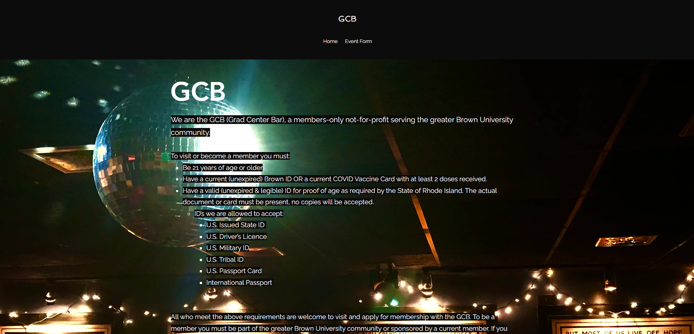
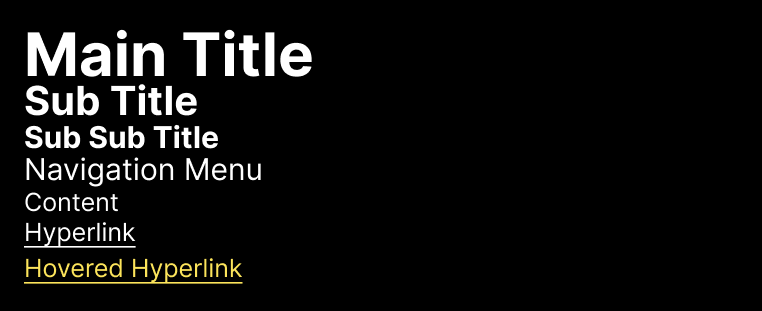
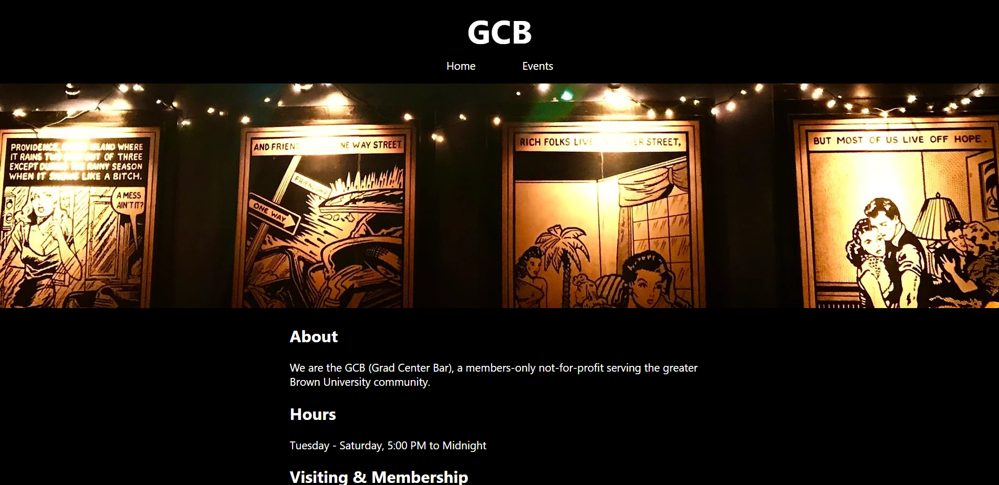
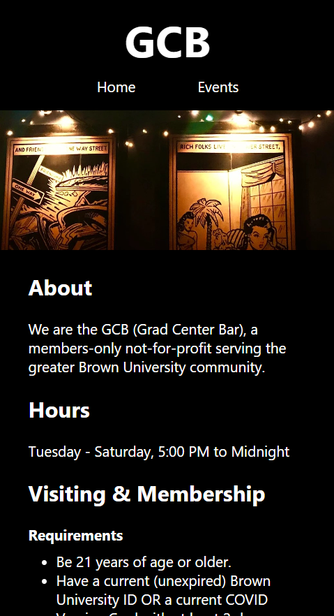

Responsive Redesign
Context
This project sought to combine students' design skills with their technical web development skills by redesigning and improving upon an exsiting website of their choosing. Students were asked to identity various problems with the site they chose, and emphasize the resolution of these problems (along with general principles of good design) in their redesigned site. Particular emphasis was placed on responsiveness of the site to different screens sizes and aspect ratios.
Choosing a Site
I decided to redesign the Grad Center Bar website.
The home page of the original Grad Center Bar website.
I chose this site because it houses relevant information for the Brown community, but its current design makes it difficult for users to find the information they're looking for at a glance.
Usability Problems
These are some of the usability problems I identified with the site:
- Text is difficult to read because it is over an image
- Information is not clearly labeled/categorized
- Users need to skim the entire page to find what they are looking for
- Users may struggle to find the same information again on a return visit
- The main title and navigation menu are too small and easy to miss relative to the main content of the page
- Some of the most important information, such as the hours of the bar, is tucked away at the very bottom of the site
Accessibility Problems
The WAVE program highlights several instances of low contrast, the greatest obvious offender of which is the white "GCB" that overlays the background image directly with no highlighting. It also draws attention to several invisible (black-on-black) and non-functional links, one of which is near the top of the page and opens a seemingly defunct checkout cart and the other of which invites the reader to "Learn more" at the bottom fo the page but has no actual functionality. These dud elements, appearing almost to be left over from previous iterations of the site, would surely confuse any screen reader.
Visual Redesign
Low-Fidelity Wireframing
The first step in the redesign was to sketch the these low-fidelity wireframes. This helped me to brainstorm a new layout that would address the issues present in the original site while still keeping its functionality and purpose in mind. In order to plan ahead for responsiveness, I prototyped layouts for three common screen sizes.
Visual Design Style Guide
The next step was to create a visual style guide to help ensure consistency and high contrast across my high-fidelity prototypes.
High-Fidelity Prototypeing with Figma
Then it was time to create the high-fidelity prototypes themselves using Figma. This step allowed me to get a sense of how my design would really look without actually committing the time and effort to building it in code. Once more, in pursuit of responsiveness, there is a different prototype for each of three common screen sizes.
The Final Product
Happy with how they turned out, it was finally time to convert the high-fidelity prototypes into an actual site with HTML and CSS. No JavaScript or JS framework was needed, as this project was meant to emphasize responsiveness and not interactivity.
You can see the final product here. I would encourage you to play around with the size of your browser window and see how the page responds. There are also screenshots below of the site at two different aspect ratios.

The redesigned site at the dimensions of a desktop.

The redesigned site at the dimensions of a phone.
Conclusion
In the actual construction of my responsively redesigned site, I found that I didn't even have to make use of many of the fancier CSS techniques I had anticipated needing. I think my decision to keep the flow of information relatively linear definitely made things easier in this regard.
With no errors, contrast errors, or alerts in WAVE and appropriate scaling for pages of different sizes, I believe that my responsive redesign is largely successful in improving both the usability and accessibility of the original site.